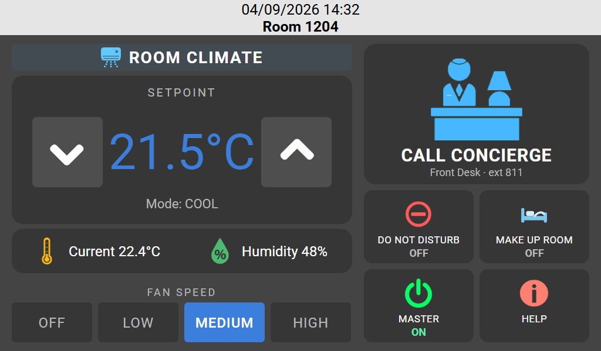
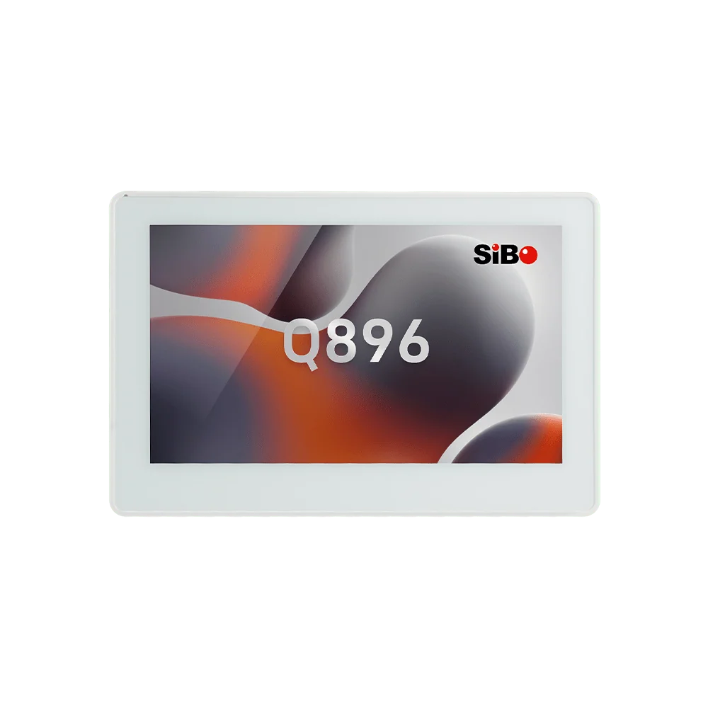
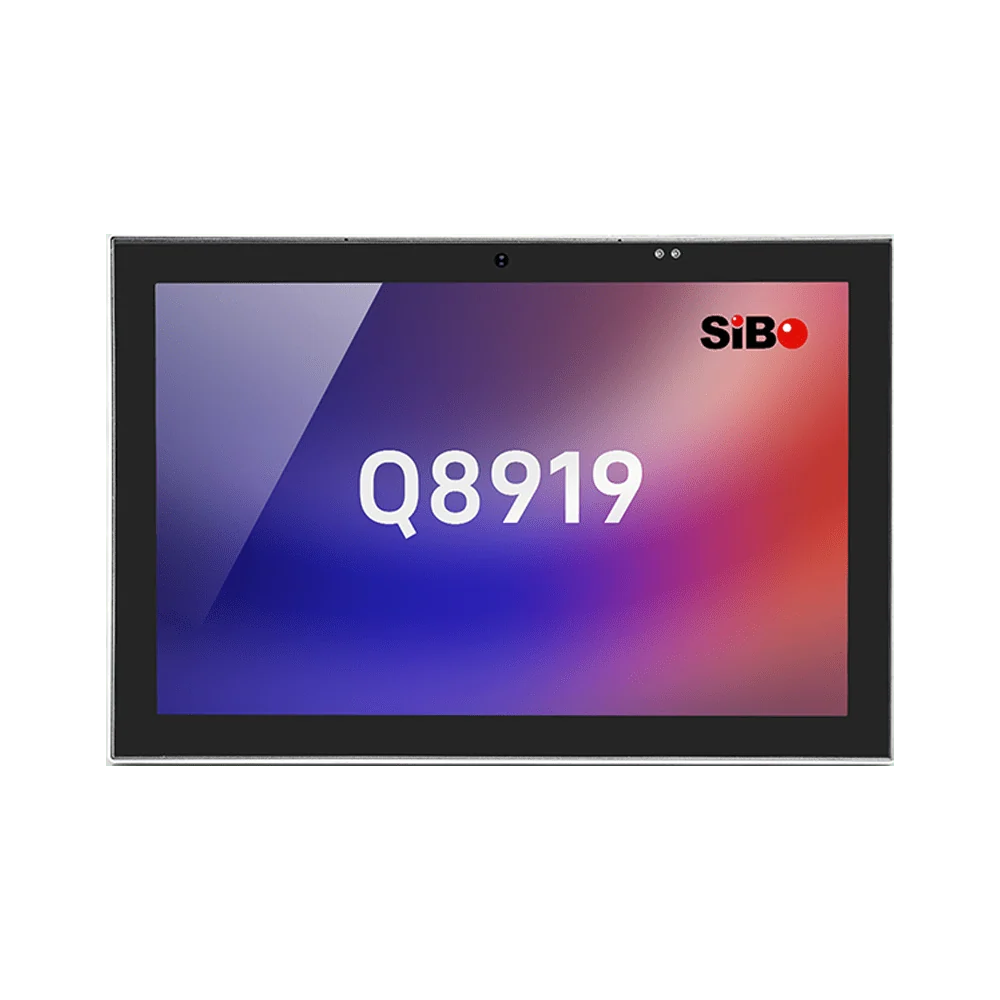
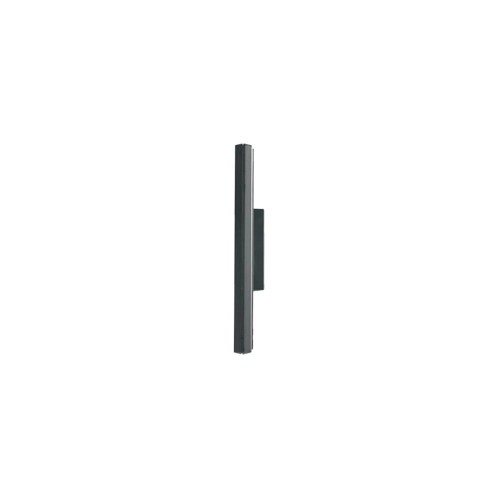
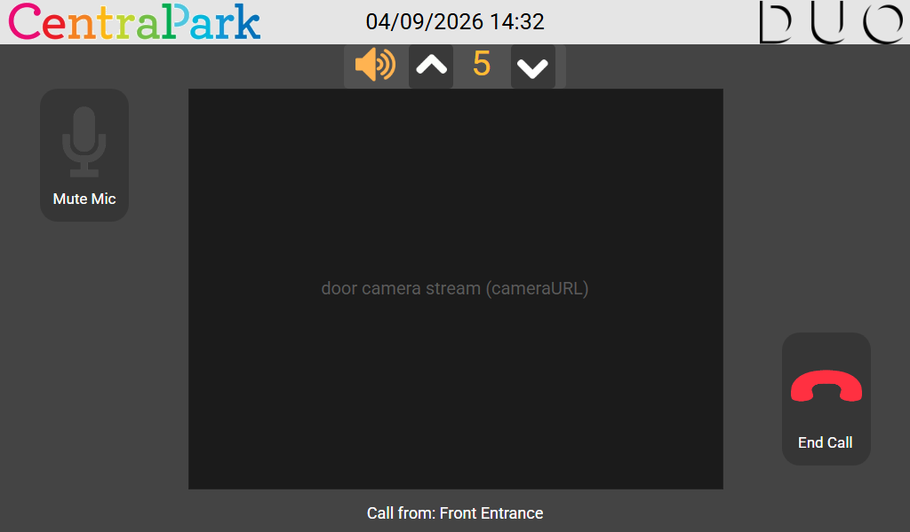
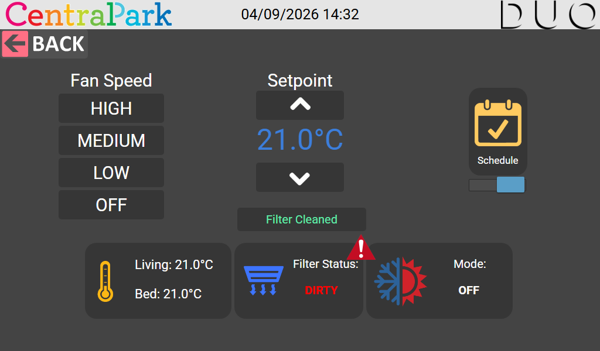
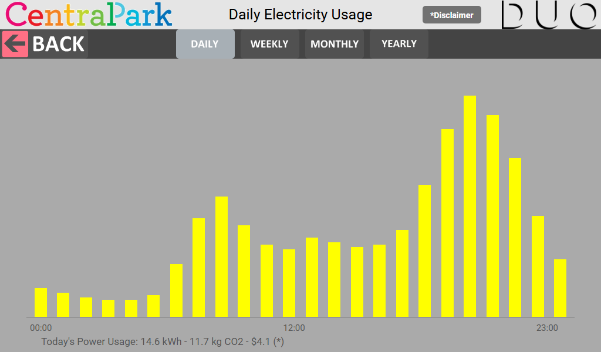
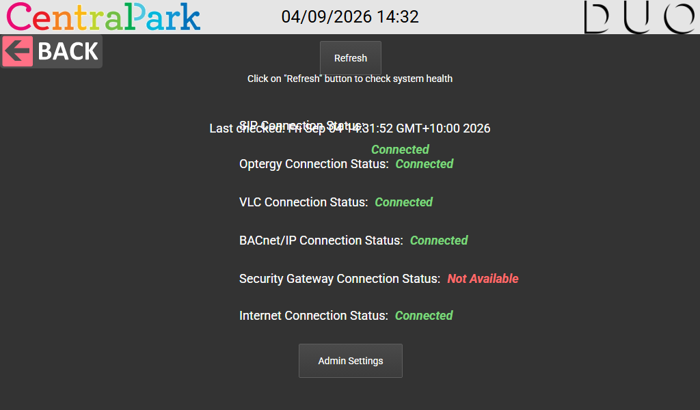

Bespoke touch panels for the buildings people live and work in.
One of four ways we support a building — a wall panel written for the systems already installed and completely modifiable to your spec: your systems, your branding, your wording. Two panel sizes cover almost every position in a building.


Commercial
Meeting room booking and availability at the door, floor dashboards, plant and energy status, HVAC setpoints by zone.
Hotel
In-room control of climate, lighting and blinds, do-not-disturb and housekeeping, guest directory and checkout — under the property's own branding.
Apartment
Video intercom to the front entrance, concierge call, electricity and water usage with cost and CO₂, climate schedules and building notices.
CT-7
7 inch panel
CT-10
10.1 inch panel

One panel on the wall, every system behind it.
Power over Ethernet, IEEE 802.3af, from the switch or a midspan injector — one Cat6 drop carries both power and data. No local supply needed. Every integration is scoped per project and built to the points list you supply.
Intercom & access
SIP video intercom to entrance stations and concierge, door release, call history and camera streams.
BMS & EMS
Live points from the building and energy management systems — setpoints, fan speeds, filter status, plant alarms.
Fieldbus protocols
BACnet/IP and BACnet MS/TP, Modbus TCP/IP and Modbus RTU, across the same Ethernet drop that powers the panel.
Metering & cost
Electricity, hot and cold water shown daily to yearly with tariff cost and CO₂ against each period.
Cloud services
Weather forecast on the home screen, local news, building notices, amenity booking and any REST API you already run.
Monitored & maintained
Each panel self-checks every connection it depends on and reports back, with remote update across the fleet.



